What Is “The Map”
The Map was written for my children as a reductive philosophical carnival for the examined life. The point is to orient them towards who they are and the crazy world that they are part of. For example, how do we act ethically when we struggle to know what’s real? This is the type of practical philosophical question that I want to be part of my children's cognitive landscape. I don't expect they'll understand the deeper point immediately, but rather, perhaps many years later, it will click: "That's what that was about!" If one day they take a red marker to my list, I'll count the project an unreasonable success.
I. Exchange
Our relationship to exchange begins when we cry for our first meal. Through demanding, giving, refusing, and bargaining, we learn the rough outline of the boundary between ourselves and others. It's the first aspect of wisdom that we encounter.
The Silver Rule
Do not do to others what you would not want them to do to you.
The term "Silver Rule" is modern but of unknown origin. The idea is, of course, ancient. A famous formulation of this rule was given by Confucius in the Analects. [1]
The Golden Rule
Treat others as you'd like to be treated.
Its positive formulation is typically associated with the teachings of Jesus as recorded in Matthew 7:12. Reciprocity has a long history across many cultures and religions, including in the Analects. [1]
The Platinum Rule
Treat others as they'd like to be treated.
This rule was popularised in 1990s self-help literature by Tony Alessandra and Michael O'Connor as a fix to a problem in the Golden Rule, although it creates another. While a naive application of the Golden Rule assumes desires are universal, the Platinum Rule can conflate preferences with obligations. The moral scold abuses the Golden Rule; every would-be tyrant in effect tells you to observe the Platinum Rule. Strictly speaking, perspective-taking can sit within the Golden Rule; nonetheless, it is useful to draw explicit attention to it.
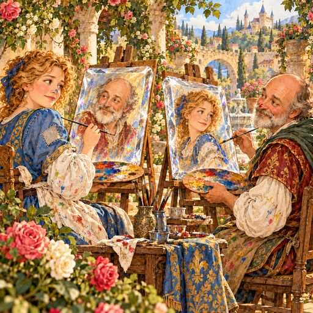
The Diamond Rule
Think about others the way you want them to think about you.
There's no canonical formulation of the Diamond Rule, and I've chosen a version inspired by Aristotle's writings on friendship in Rhetoric. [2]
Together, these four rules are the basic heuristics of moral exchange and create a neat progression: restraint (silver), reciprocity (golden), perspective-taking (platinum), and judgement (diamond).
The Blue Ribbon Rule
Grace is given and received without regard to merit.
Who does not feel they need God's grace, yet who feels deserving of it? In this case, merit refers to the Buddhist notion of wholesome actions that bear positive karmic fruit. The Bodhisattva Warrior, who vows to liberate all sentient beings before obtaining their own liberation, seeks to transfer merit to others. In a sense, the Blue Ribbon is the action that springs forth from the perfection of wisdom. Thus, good is cultivated, and even earned. Buddhists sometimes believe that fortunate circumstances are the earned fruition of past good deeds, including in past lifetimes. In contrast, the Christian notion of grace has no accounting. There's no ledger of merit.
At heart, the Buddhist position on merit is not opposed to grace. The gap as I've presented it could be construed as what Chogyam Trungpa referred to as spiritual materialism: the accumulation and possession of spiritual attainments. [3] Of the two, I believe grace is conceptually easier than merit. As Tad Williams memorably puts it in the fictional writings of St. Sutrin: “Piercing My Hearte there is A Golden Dagger; That is God. Piercing God’s Hearte there is a Golden Needle; That is me.” [4]
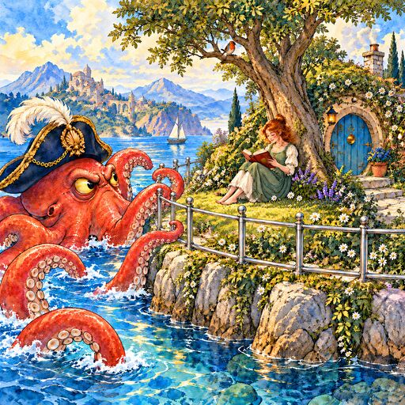
The Titanium Rule
If someone finds your boundaries irritating, then you absolutely need those boundaries.
There's no canonical formulation of the Titanium Rule. I've provided an original formulation of an old idea.
The Fool's Gambit
The fundamental result of lying is mistrust.
The Buddha taught Right Speech as part of the Eightfold Path to enlightenment, Right Speech includes injunctions against false speech. Commentary connects truthfulness to trustworthiness. The idea is simple and obvious. I first heard the precise formulation "The fundamental result of lying is mistrust" from the Buddhist teacher Moh Hardin. I conceptualised the act of lying as a fool's gambit in which our attempt to protect the imaginary self becomes self-defeating.
The Original Social Contract
One hundred good deeds may or may not wipe away a single mistake.
Enlightenment scholars, including Hobbes, Locke, and Rousseau, popularised the idea of a social contract, which today includes talk of such positive rights as universal basic income and universal health care. However, I believe the idea of a social contract goes back to the evolution of morality, and the "self-domestication" of pre-humans. In The Goodness Paradox, Richard Wrangham argues that this happened through, of all things, premeditated murder of our more odious male ancestors, made possible through the evolution of language. [5] In turn, this created a set of instincts that set modern humans apart from other animals, and gave rise to an "OG" social contract amongst our first ultra-social ancestors.
The Gentleman's Covenant
At the heart of every relationship is a tacit conspiracy.
There are embedded assumptions in every relationship, and somewhere in there is something utilitarian that you both value, even if it is unconscious. Even children's relationships involve a conspiracy of play that helps them become successful members of a society. I first appreciated this when reading Steven Covey's Principle-Centred Leadership, which puts forward leadership as an enlightened hierarchy. [6] Even in this idealistic space, there's a conspiracy of mutual self-actualisation. Despite the apparent inescapability of conspiracy, it is nonetheless gentlemanly to cultivate an aesthetic appreciation of others whilst still being attentive to the nature of the relationship.
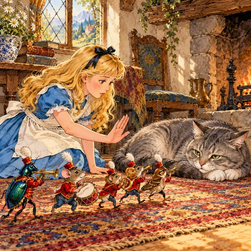
The Harmony Rule
Avoid doing anything that would cause a cat to flatten their ears.
Human affect is quiet, slow, and restrained compared to our nearest primate cousins. Not so with children. Part of learning exchange is practising the expected level of social control. Our children love cats, and so cat ears become an easy and comprehensible litmus test for restraint.
II. Theatre
As teenagers we plunge into the adult social machinery, and are easily befuddled by its obvious contradictions and plain weirdness. We are naturally sanctimonious as we discover, and sometimes tap into, the veins of power that shape society. ("We Didn't Start the Fire" is now more than a catchy song.)
The Lofty Perch Rule
The moral high ground is a club for those more equal than others.
Some of us are, indeed, more equal than others -- a game that all of us have played, sometimes unwittingly. When someone claims "I have nothing to gain by advocating for X", the obvious answer is: approval from the "right" people, prestige, belonging, and even admiration. Preen your feathers in just the right way and gain access to the club of the elect. You say you have nothing to gain, but really you have everything to gain. In Plato's Republic, Thrasymachus argues that rulers declare that whatever serves their interests is “just”. [7] The timeless lesson is that the pursuit of power and prestige can be readily disguised as moral universalism. "Four legs good, two legs better!"
The Social Signaller
Moral posturing tells on itself.
Relative social status is a zero sum game. When we place ourselves above others we simultaneously place someone below. As such, there's something inextricably ironic about moral posturing. Sometimes we even think that we're deserving, a conceit that we fail to notice because we're just so moral.
The Grandstander's Sleight of Hand
The idealist does not see trade-offs.
The moral imagination can be an impoverished place of daemons and angels. It's either the perfectibility of society or fear of calamity. With untrammelled alacrity, the grandstander argues for "the good", oblivious to real-world trade-offs, and therefore to the often powerless people who'll get blown over when ideals meet reality. Talking trade-offs is rarely a power move, even though this is the space in which problem-solving operates. More cynically, someone could understand trade-offs perfectly well and simply hide them for rhetorical effect. Sell a noble lie to seek the greater good, for anyone who mentions trade-offs now stands in the way of goodness itself!
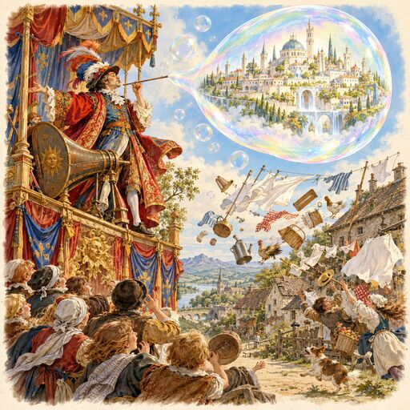
The Monkey Court Rule
We argue like lawyers because we live amongst judges.
Jonathan Haidt talks about the "inner lawyer", and how we reach judgements before finding reasons for them. [8] In effect, when we research an idea that we identify with, we ask ourselves "am I allowed to believe this", which is a far cry from disinterested investigation. At face value this seems irrational. But irrational according to what goal? Much of this theatre springs from the almost reflexive judgement that we throw at people merely for having an opinion, or even being the wrong "identity" in the wrong place at the wrong time. We imagine that we're qualified to make these judgements, but the sad truth is that we're not. These judgements aren't primarily about knowledge, but rather they are part of an ancient unconscious instinct through which we construct society. Hence we don't get the conversations we want, but we do get the conversations we deserve.
The Memetic Selection Effect
Moral entrepreneurs mine a culture for everything of value.
Howard Becker introduced the idea of a "moral entrepreneur" as someone who creates and enforces moral norms, which is always a way to gain power and influence, even if inadvertently. [9] This morality play is sometimes disguised as a good faith discussion of ideas. In reality, ideas are thrown against the wall in the hope that something sticks, and so moral communities accrue sometimes contradictory talking points merely for their rhetorical efficacy. This is memetic selection in action.
In "The Selfish Gene", Richard Dawkins coined the term meme for a unit of culture that replicates and undergoes selection effects. [10] If a culture holds something -- anything -- valuable, then it becomes a prime target. For example, to combat evolutionary theory, creationists decided that they were doing science, precisely because our culture holds science valuable.
This example fails to capture the sophistication of memetic selection, and its power over political discourse and belief. Consider Hannah Arendt, who used the trial of Adolf Eichmann to promote her academic work on evil. In her book Eichmann in Jerusalem: A Report on the Banality of Evil, Arendt argued that although he was a committed Nazi, Eichmann's wickedness was characterised by thoughtlessness -- the mentality of a functionary in a machine -- rather than by ideological commitments. [11] Arendt supplied a culturally attractive explanatory meme that succeeded precisely because the culture in which it landed values both compassion and systems-level explanations. Later analysis, especially Eichmann's own words, indicated that he really did have an ideological commitment to genocide. Although more accurate, it makes Eichmann cartoonishly villainous, and so we continue with Arendt's framework. However, Arendt's formulation obscures ideological commitments and risks turning tragic wrongdoing into an imaginary morality play in which the wrongdoers are not treated as fully competent human beings. The meme is selected, and insofar as it rubs against reality, it wears down the cultural authority of the implicated values: compassion and systems-level explanations. They have been mined.
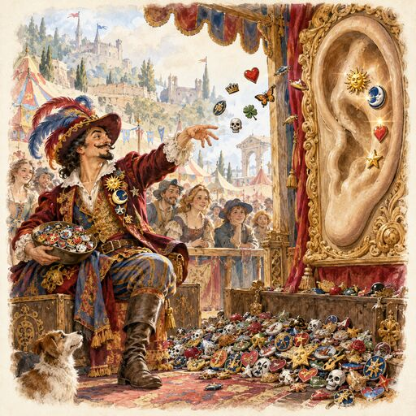
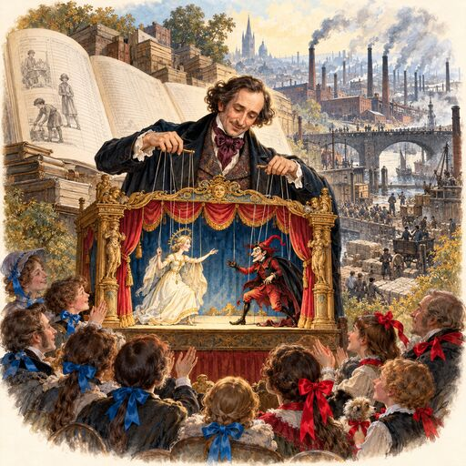
Charles Dickens’ Rule
Imaginary conversations between imaginary people are in-group virtue displays, not a substitute for history.
In the movie American Fiction, fictional author Thelonious "Monk" Ellison describes himself as someone who "makes up imaginary conversations between imaginary people." [12] This true-to-character self-deprecating remark sits adjacent to his central frustration: the books the public wants are not the books he wants to write. We are narrative creatures, and we love stories full of conflict that make us feel something. We know the situations are contrived. We know they exist to pluck at our heartstrings. Yet we seem unable to digest a story, such as Charles Dickens' Hard Times, without believing that we've learned about the Industrial Revolution. [13] Fiction manufactures a moral world from the materials of the author's moral community, and is readily accepted when it is congenial to the moral imagination of that community. The goals of this moral theatre are far from a dispassionate investigation into the complexities of society. No matter how compelling it seems, fiction is no substitute for history, or in this case, economic history.
The Moral Community
The beliefs that bind us are shielded from consequences.
With the exception of human beings, ultra-social species -- termites, bees, ants, wasps -- are genetically similar communities, typically kin. This is one step removed from having identical genetics, like the "community of cells" that makes up our bodies. Not so for humans, where we readily cooperate with people we've never met and may never see again. In The Righteous Mind, Jonathan Haidt argues that we solve the cooperation problem through the formation of moral communities. [8] In particular, a freeloader could take advantage of a community's protection without cooperating, and then produce offspring who do the same, gradually destroying the cohesion of the group. In the body, this is akin to cancer cells, which "strike out on their own" and eventually kill the host.
Morality therefore occupies a special place in human society. It functions to suss out who we can trust. When someone breaks the rules, or heaven forbid, has an opinion that challenges a moral ideal, they meet the "immune system": moral condemnation. Cancellation. A death sentence in our distant past.
Note that this "amorality of morality" means that the word "morality" is overloaded in ways that are characteristically confusing. Moral shibboleths must necessarily be highly reductive, and readily digestible, producing a lowest-common-denominator low-information effect.
In Thought Reform and the Psychology of Totalism, Robert Jay Lifton describes thought-terminating cliches as a mechanism of social control. [14] Lifton defines a thought-terminating cliche as a highly reductive phrase that serves as both the beginning and the end of ideological analysis. My claim is that thought-terminating cliches sit at the heart of every moral community, and that they help solve a problem of genetic selection for non-kin ultrasociality.
Given that the "moral immune system" hangs over our heads like the sword of Damocles, we unconsciously shield these reductive cliches from their real-world consequences, creating a moral irony in which our most closely held moral beliefs create friction -- and thus suffering -- in the world.
The Gadfly in Plato’s Cave
We choose between the tribe’s protection and recognising its delusions.
In Plato's Republic, Socrates imagines the people in society as prisoners chained in a cave, seeing only shadows cast on a wall, and mistaking the shadows for reality. [15] Furthermore, the shadows are cast by other people. That is, there's a collective epistemic system that is really a delusion. If a prisoner escapes the cave, and discovers the world outside -- illuminated by the sun, an allusion to "the Good" -- they will feel a tremendous need to wake the prisoners to the reality of the illusion. However, Socrates warns, the prisoners will resist. They may even want to kill him.
The allegory fails to explain the functional significance of the cave. I've argued above that the shadows are akin to thought-terminting cliches that bind us together in a group. A tribe is a formidable power unit. The resistence, even violent threats, are part of the moral immune system.
This raises an interesting question: why can't we recognise the shadows for what they are yet still be members of the tribe? The point is that other people will sniff us out. We're built for moral policing. And so the nature of the delusions must remain in the unconscious. We experience this as a surge of strong emotions that shuts down disinterested cognition whenever we sense the need to "circle the wagons" around ideas that we can have, at best, only oblique awareness. For the delusion to work, it must be experienced as "T"ruth.
Tellingly, Socrates was sentenced to death for impiety, and corrupting the youth. Questioning the city gods -- shadows -- that bound the people of Athens into a power unit. Socrates refused escape, and accepted his death precisely because he refused to freeload on the tribe, which he could no longer be part of. The gadfly had triggered its immune system: he saw through the tribe's delusions.
Darwin’s Dangerous Idea
Values are instrumental to evolution.
Charles Darwin argued that natural selection can create complex design without foresight, purpose, or an intelligent designer. Even Darwin worried that no such process could create a human eye. Yet more than a century of analysis reveals that this is not only possible, but that it happened. Daniel Dennett called this Darwin's Dangerous Idea in his book by the same name: our existence doesn't necessitate purpose or intelligence of any kind. [16] Dennett goes on to describe this idea as a "universal acid", because it eats through all traditional explanations. Indeed, everything we value, including human values themselves, is a product of evolution. Further, some values are clearly instrumental to evolution, including, as I've argued above, the moral instinct itself.
The Divine Rule
The only universal moral truth is that everyone holds their moral truths to be universal.
In his essay The Moral Instinct, Steven Pinker points out that moral judgments are experienced not merely as personal preferences, but as objective universal claims. [17] This cannot be true given the diversity of contradictory moral opinion across the world. We cannot all be right. It seems instead that morality has a cultural-biological structure similar to language. That is, just as there are a plethora of unique languages culturally constructed upon innate cognitive machinery, so it seems with morality. The difference is that we fail to see our inherited moral assumptions as inherited.
This is a psychological claim about moral cognition, and cautions us to examine the assumptions that we're making. It is not a reification of moral relativism which conflates mere cognitive flexibility with reality. Sam Harris, for example, argues that we can justify moral claims through evidential reasoning about undesirable outcomes such as collective suffering -- a touchstone for "bad" if bad is to have any meaning at all. [18]
The Painted Tongue Rule
Know the other side even as you paint your own.
To err epistemically is to be human. I've argued above that powerful unconscious instincts propel us towards what commentator Ezra Klein once depressingly described as an epistemic black void. [19] As he says, most of what he reads from "his own side" is well thought out and nuanced, yet the evidence from political psychology clearly cautions us against making this assessment. Cognitive psychologists Keith Stanovich and Richard West describe this as myside bias: reasoning in favour of one's own side.
This is a powerful and robust bias from which intelligence guarantees no protection. However, Ezra Klein is too pessimistic. John Stuart Mill prescribes the initial medicine in his essay On Liberty. [20] Listen to the other side, because "someone who knows only their own case knows little of that". Yes, we may have painted tongues, but if we really want to understand -- if that's our goal -- our opinion can only be sharpened by hearing the strongest arguments against our side. Put down my-side, and know their side. Then, even when you paint your own, you can be more confident in what you know.
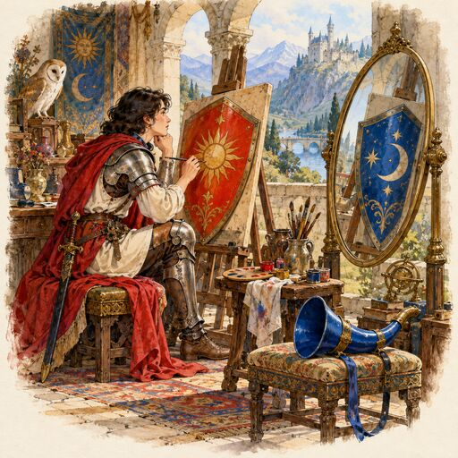
III. Belief
It's one thing to see the clown cart of moral theatre; however, it's quite another to appreciate its inevitability. We are trapped within a magical prison of our own creation, a prison constructed from belief itself.
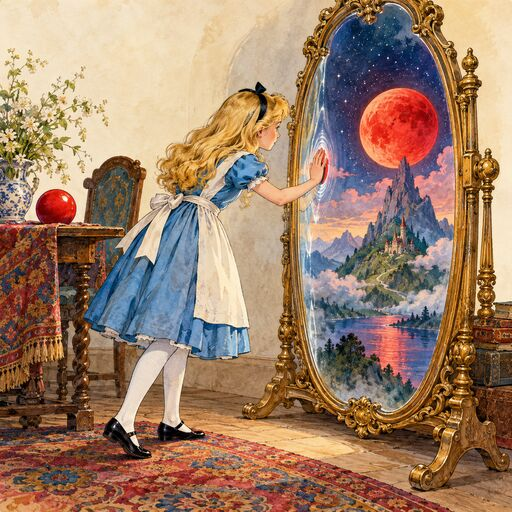
Through the Looking-Glass
Beliefs are underdetermined.
In Lewis Carroll's Through the Looking Glass, Alice crosses a mirror into a dreamlike world that resembles our own, but works in unexpected ways. [21] In his whimsical way, Lewis Carroll plays with how beliefs shape the world that we think we're perceiving. That is, perception is constructed. This is self-evidently true even at the level of sensory perception, which David Marr pointed out must be constrained by assumptions. [22] For example, we feel that we're embedded in a 3D world, even though our retinas are only 2D. Strictly speaking, this is mathematically underdetermined: an infinite number of 3D scenes can produce precisely the same retinal image. Our brains take the available retinal evidence and apply constraining assumptions to produce a remarkably accurate 3D perception.
The analytic philosopher Quine argued that evidence alone can never distinguish between carefully chosen mutually incompatible belief systems. [23] A chicken can never tell from past evidence alone whether the farmer is coming to feed it, or whether something terrible is about to happen. [24] (The problem of induction is a special case of underdetermination.)
Taken broadly, all beliefs have this underdetermined quality. None of us can know if we're a brain in a vat, or whether God created the world last Tuesday. More importantly, beliefs are a type of map, and a map can never be the territory. Cognition itself must have constraints and assumptions that impose limits. A 3D ball is easy, but can you imagine walking around the inside of a 4D hypersphere? Yet it is these limitations that make belief formation possible at all.
"The light dove, cleaving the air in her free flight, and feeling its resistance, might imagine that its flight would be still easier in empty space." -- Immanuel Kant.
Cogito Ergo Sum
There’s always some construction.
René Descartes famously begins his Meditations with "Cogito Ergo Sum": there is cognition, therefore I exist as a thinking thing. [25] There is a flaw here: the existence of cognition only implies the existence of cognition. Descartes has jumped from the observation of cognition to identification with a particular cognitive construction: a thinking thing that he eventually identifies as the soul. The point is that there's always some construction, and "you", whatever that means, are being continuously constructed somewhere in that cognition.
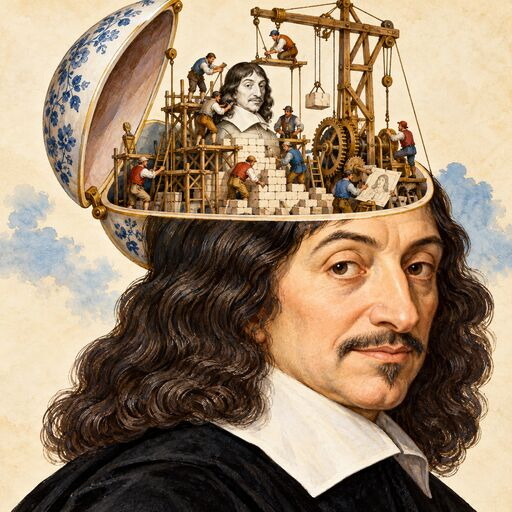
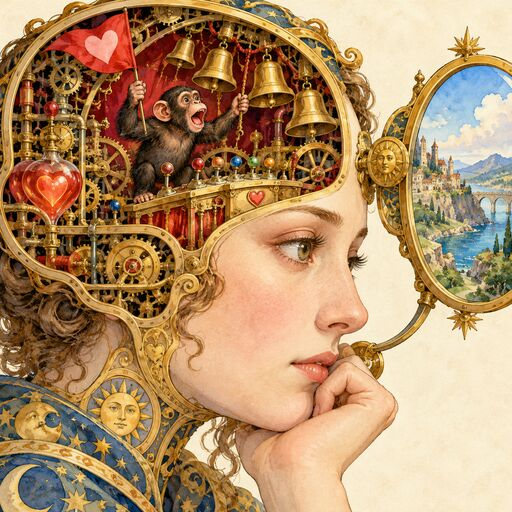
The Emotion Chip
Feelings are the signals of the six-million-year-old self; there is more to you than that.
In his book The Two Million-Year-Old Self, Jungian psychoanalyst Anthony Stevens uses our inner Homo erectus as a metaphor for achetypcal mental structures that spring from our evolutionary inheritance. [26] That is, there's a two million-year-old being inside of all of us. I disagree. When I'm hungry and take that first bite, or when a glint catches my eye, that's my inner fish. A motivational-emotional heritage that stretches back over 400 million years. So why six million years? Because that’s roughly when the human and chimpanzee lineages diverged. We share an ancient “emotion chip” that drives behaviour and shapes cognition, and chimpanzees are no model for enlightened belief. (Shudder.)
Our emotion chip sends many of the same signals that helped our ancestors survive in frightening and harsh conditions. Although they shape belief formation, they are not a sound basis for belief. Consider the powerful emotions implicated in moral theatre, and the associated carnival of errors. Conflating feelings with truth is a blind spot that can have tragic consequences. It doesn't matter how beautiful the belief feels. Even the sublimity of powerful religious experiences, the proverbial road-to-Damascus moment, is not a certificate of truth. The sublime belief may be no more true than a child's fear that something in the dark will swallow them up. Like the fear, the sublimity is a heuristic signal for attention that springs from ancient machinery.
Feelings are informational. They are important. Sometimes they contain potent life-saving information. However, we are gifted with self-awareness that makes us more than our feelings. The emotion chip is just one part of the machinery. We do, in fact, want to distinguish ourselves from chimpanzees.
The Feelings Compass Rule
Irrationality is often merely the rational pursuit of unconscious goals.
Humans are so irrational! Except we're not. Rationality always exists in the context of a goal. [27] It's not a goal itself. The confusion typically arises from thinking of rationality as truth seeking; however, we could also seek stable relationships, prestige, safety, pleasure, or even the exploitation of others. Much ostensibly irrational behaviour can be understood as the rational pursuit of unconscious goals, and those goals are set by a motivational-emotional system: a feelings compass.
Consider losing your temper. You explode because you've been insulted. The anger is the feelings compass that sets the goal. The ostensible irrationality could merely be the rational pursuit of other goals, such as imposing a cost for disrespect, or forcing a concession. The self-righteous narrative -- the belief -- is part of the act, and thus we must appreciate the goal to assess its veracity.
My favourite example is press secretary Sean Spicer who publicly declared that Donald Trump had the biggest crowds at his first inauguration. The public could almost see his size 26 clown shoes as he contradicted the lying eyes of photographic evidence. It was plain to see that Spicer was simply being a team player. The absurdity of the lie was a signal of his loyalty to the boss. His feelings compass was squarely set to "keep my job". Demonstrating he was a good sport, Spicer later appeared on TV to parody his one-time clown act. I always had a soft spot for Sean Spicer.
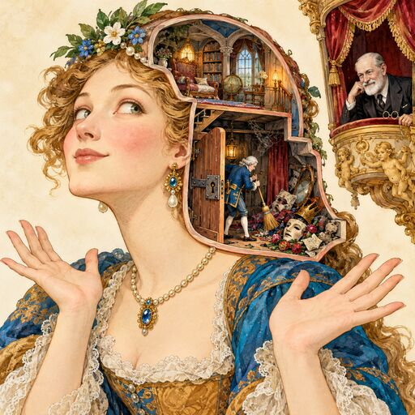
The Face-Saving Rule
The easiest person to fool is yourself.
It is plausible that human intelligence evolved partly through an arms race between social manipulation and counter-manipulation. Byrne and Whiten called this the Machiavellian intelligence hypothesis. [28] I push my bullpucky; you assess my claim to innocence. The evolutionary biologist Robert Trivers argued that this works best when we believe our bullpucky. [29] That is, self-deception is an adaptive mechanism for evading the counter-manipulation strategies of others.
Curiously, this requires that self-deception be naturally compartmentalised. Or at least in part. It's an illusion that the self is a unified whole. Instead, it seems that there are many things happening in parallel, and one of those things could be ensuring that we have at most oblique awareness of the facts. It seems that this is accomplished through powerful, emotionally unpleasant defence mechanisms. Denial, projection, externalisation, rationalisation. Madness. How dare you tell me what I just did!
So it's not just that it's easy for us to lie to ourselves, but rather, it happens out of sight. Depressingly, having the lie pointed to feels like someone poking at an infected wound in our psyche. Notice when you're face saving, and consider whether Freud is heckling you from the sidelines. Be self-deprecating, and enjoy the irony that the fear of being "found out" is also partly the reason why you have your human intelligence in the first place.
The Neuroplastic Straitjacket
Sometimes we fail because the mind is shaped by the past.
The brain changes itself. It is plastic. But there's a dark side to this plasticity: some behaviours and beliefs get deeply carved, and stubbornly remain despite our intentions and wishes. Consider the phenomenon of religious residue. Daryl Van Tongeren coined the term for the persistence of religious patterns long after people deidentify from their religion. [30] Our explicit beliefs can change, while superstition and entrenched guilt remain. We could think "Man created God", yet still fear to take the Lord's name in vain, merely because our minds were shaped by the past.
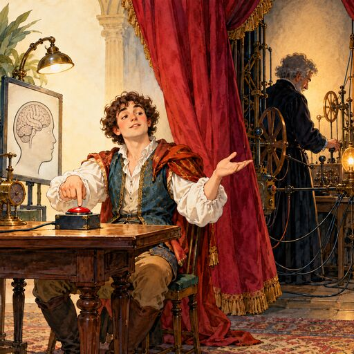
The Fundamental Law of Experimental Psychology
No one knows what’s happening.
The experimental section of a psychology study follows a typical pattern. We deceived the participants, and the experiment worked because they had no idea what was happening. This is strong evidence that we are remarkably opaque to ourselves. I once told my kid that you need to know who you are. "That's easy, I already know who I am." If only it were that easy.
The Brainiac’s Rule
Someone who ploughs the field to eat the worms has nothing to learn about growing food.
The Buddhist academic Naropa was once visited by a dakini who asked if he understood the meaning of the Buddhadharma. The dakini wept at his reply. Thus begins the magical allegorical story of Naropa's quest for the legendary teacher Tilopa, who would set him straight. Tilopa teaches Naropa through a series of didactic encounters that illustrate aspects of Naropa's blindness.
My favourite story is when Naropa encounters two old farmers ploughing a field, and pulling the worms out of the ground to eat. Repulsed, Naropa refuses the food. I imagine myself trying to patiently explain to the two relics that they could plant some vegetables and grow some nice food. Maybe even bake some bread. But the brainiacs already know what they know, and have no use for such information. As Chögyam Trungpa remarked, it can be shocking to encounter the brilliant, alive quality of ignorance. [31]
In the story, the elderly farmers are understood to be a manifestation of Tilopa himself. Naropa refuses the food because of "habit-forming thoughts". The field is the Buddhadharma, and Tilopa is saying to Naropa that he spent his life "ploughing the Buddhadharma", but misunderstood what its for, and remained stuck in habitual beliefs.
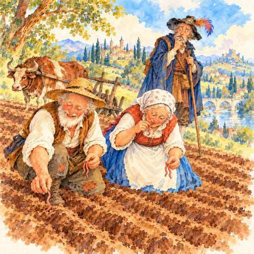
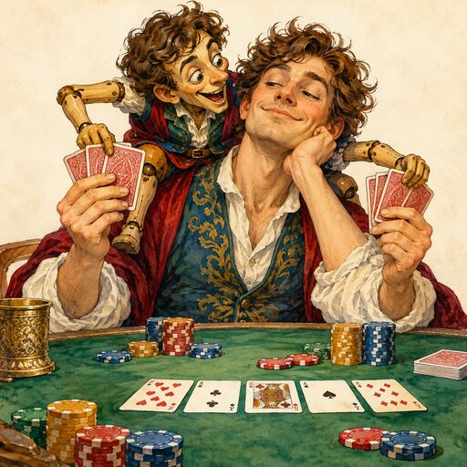
The Inner Chatterbox
A curious tale in which we are both the player and the mark.
Do you talk to yourself? Thoughts like "I think I'm going to get a glass of water". Who are you addressing!? It's so weird. To paraphrase Sam Harris, "you're trying to listen to me, and then some voice in your head says 'he looks like Ben Stiller'." This voice follows us around like a ghost. Sometimes it is boring, and sometimes I crack myself up. This unbidden self-talk affects mood, coping, self-control, and importantly, tracks our overall well-being. So it's worth thinking about how we talk to ourselves. And there we're bound to discover a curious tale, a nattering chatterbox gnawing away like a character in a Lewis Carroll novel. Or perhaps Philip K Dick. The thing is, we are so often the hero in this narrative. The one who plays the winning hand. In card play, however, if you don't know who the mark is, then you're the mark. And that's what's so odd. I believe that thinking of ourselves as the chatterbox's mark clarifies what we believe is happening in our lives, and reveals motives that we typically hide from ourselves. So play another round, examine the cast, and see what the cards reveal.
The Naked Shadow
To see the self is terrifying.
Enlightenment sits at the centre of the Mandala. Or more precisely, a type of stable curiosity. The entrance is through the realm of Amoghasiddhi, where paranoia is transmuted into all-accomplishing action. This happens at midnight, a private space when the day is done, the party is over, and the audience has gone home. The mudra is the right hand raised above the heart facing outwards, a gesture of fearlessness.
What is it about stability and curiosity that requires such a gesture of fearlessness? It is because it is an act of fearlessness to stare into the centre of our being where we encounter what Carl Jung referred to as the shadow: the parts of us that we suppress and reject. [32] The mind is a collection of many things that sometimes operate as if they have their own agendas. We don't choose to have defence mechanisms, they are just there, and they act on their own to shut down curiosity, and snap our stability. Curiosity is an explicit threat to the parts of the psyche organized around preserving our ignorance.
By contrast, consider the vampire myth. The Jungian analyst Barbara Hort argued that the vampire's immortality symbolises a pattern of psychic energy that does not resolve itself. [33] The vampire is a being that has so thoroughly disowned its shadow that it manifests as almost pure seductive evil. Seductive, because it contains our disowned vitality: assertiveness, anger, ambition, sexuality, and the forbidden fruits of untrammelled power. Yet in actual fact, the vampire is a contradiction. It fails to see its reflection because it no longer recognises itself. It drinks blood because it exists in a parasitic relationship with the life force of others. It sleeps in a coffin because it persists without living. And it lives in darkness because it is destroyed by the sun, which symbolizes wisdom, or the enlightened mind.
To see the shadow is to witness our psychic corruption. It is to know and face our fears naked, whilst trying to remain curious.
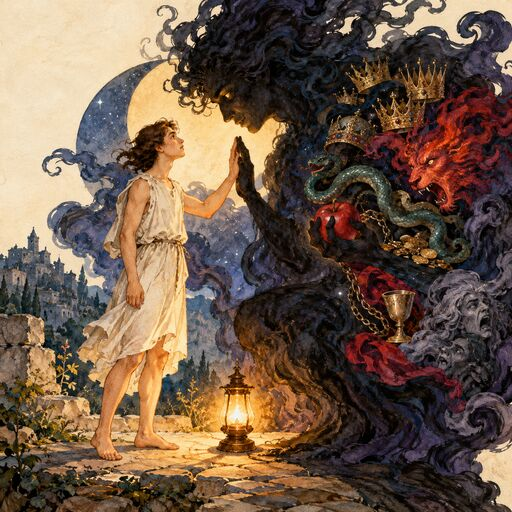
The Wanderer’s Return
What thought has you right now?
IV. Sovereignty
We are Kings and Queens. Yes we are mired in irony, but we are also the sovereign of our lives. How should we rule?
The Granite Rule
You are the principal witness to your life.
Only one person has first-person access to your life. Other people can testify, and that matters, but don't let anyone take ownership of your story. Consider the awkwardness we often feel when addressing a large group of people. So many eyes, and so many opinions aimed directly at us. The first act of a sovereign is to see the emptiness of those opinions. Yes, the opinions are real, but you only construe them second hand, manifesting in your psyche. You are the principal witness to your life.
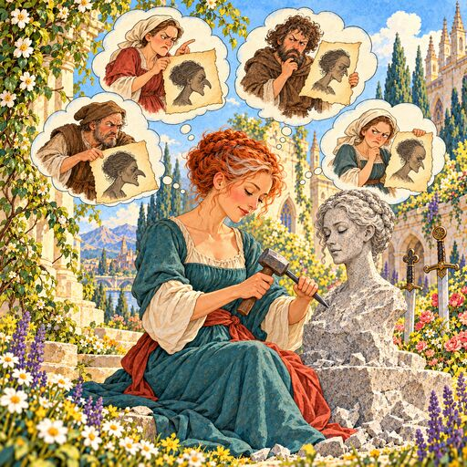
The Flywheel Rule
The mind acts on beliefs built on beliefs, and it's belief all the way down.
The mind is a belief machine. It's not merely that we have the occasional weakly held opinion, but rather, every layer of cognition is itself couched in belief. It's beliefs all the way down, from abstractions about the divine to the ostensibly pure perceptions of the senses.
This is a conundrum for a sovereign. To know how to act, we must know what's real. But how do we do that when the gauges on the dashboard are all belief? All underdetermined. That is, there is an epistemological problem at the heart of ruling our lives.
We cannot step outside of our own cognition to assess our beliefs. That is just more belief. More flywheel. However, there is a partial way out once we note that beliefs are constrained by the environments that we are in. In a strict sense the environment is part of the mind, and we can use this to better constrain our beliefs. The more abstract the belief -- eg., narratives about our relationships, or even the divine -- the more it needs to be constrained by mundane facts about the world. Make evidence a central habit of our everyday thinking. Even though beliefs are underdetermined, not all beliefs are equally likely, and it is the world itself that makes it so.
In this way we can calibrate the great flywheel of belief to be more aligned with who we are and what we're part of. Through evidence we can cut through false beliefs and build better lives.
The Instruction for the Examined Life
The meaning you are after is in the things that you avoid.
Everything that has a beginning has an ending. Everything dies. Death brings life into focus, and contemplating our mortality paradoxically makes us kinder, gentler, and even happier in the moment. That's because we see procrastination over the important things. ACT, a form of psychotherapy, centres on the idea that we avoid living fully because doing so challenges the strategies that we use to avoid unwanted experiences. [34] Yet it is precisely working through unwanted experiences that brings us into contact with reality, whether it's as simple as mastering a flossing routine, or discovering why we entangle ourselves in miserable situations. When we examine the sweep of our lives, so many of these mountains turn out to be molehills, or better, sometimes we discover actual wisdom hiding in our madness.
When playing the piano, I used to imagine I was imitating the style of a particular type of person, playing with grace and poise. But that was just me. That was my style, projected onto an ideal because it didn't sit with my self-concept.
Be curious about what you avoid. You may learn something quite unexpected. Even the dishes have something to teach you about life, and an unexamined life is a life half lived.
The Implacable Steward
Fix the problem, not the blame.
From a certain point of view, life is a long series of problems that we fix. One after the other. An argument can be made that this is why consciousness evolved in the first place. [35] As stewards of our lives, we should not be distracted by self-pity, resentment, or blame of any kind. Fixing the blame is only useful if that is indeed part of fixing the problem. More typically, it's just a distraction from what's important.
The Inner Sovereign
You can have results or excuses.
The "inner sovereign" assumes the responsibility of governing our lives. It may be useful to examine the circumstances of failure, but making excuses is almost always superfluous. A sovereign does not outsource agency.
Epicurus’ Rule
Distracted appetites are poison.
The Epicureans were a philosophical school from antiquity that preached that the good life consisted of restrained and wise pleasure, and freedom from bodily pain and mental disturbance. Every day that we enjoy, without drawing down on our future, is likely a day well lived. When we seek pleasure in a distracted way, we are actually poisoning ourselves. Whether it's playing video games for too long, or literally poisoning ourselves with too much food, it's a misunderstanding of pleasure. A classical Buddhist metaphor is that pleasure is like honey on a razor blade: sweet in the moment, but also dangerous to lick heedlessly.
The Pleasure Guidance System
Desire is a vector, not a reachable end.
We seek pleasure, and avoid pain. These are the two sides of the "Pleasure Guidance System", a plausible subsystem of the psyche that turns irritation into action. There's something inextricably unsatisfactory with desire, because it promises a type of completion, but the completion never comes as our guidance system attains a new target. That is, we are always moving towards some target that we never obtain. Even pleasant experiences are unsatisfactory because we know they're temporary.
That doesn't mean that nothing is worth striving for. Happiness can be built through hard work, family, self-improvement, or any number of things. The point is that no matter what you crave, if you're not enough without it, then you won't be enough with it.
The Arkenstone Rule
Put intelligence between yourself and the things you desire.
In the climactic chapters of The Hobbit, Thorin Oakenshield loses all judgement as he becomes possessed by his desire for the Arkenstone, a legendary jewel with deep ancestral significance. [36] So stubborn and blind has Thorin become that he threatens the very resurrection of the dwarven kingdom that he seeks. To break the spell, Bilbo Baggins -- the thief in the night -- steals the Arkenstone, and delivers it to the men of Laketown, and to the Elvenking to use as leverage. This act of cleverness breaks a diplomatic deadlock, and eventually allows for an alliance that wins the day against the forces of darkness. As Gandalf remarks to Bilbo: "There's always more about you than anyone expects!" Even whimsical stories can contain timeless advice.
The Ascetic’s Rule
All things in moderation, including moderation.
This was a family rule of a friend, and the original inspiration for putting together the map. We may typically err on the side of indulgence, but even so, to hit the mark on moderation we should still let loose every now and again.
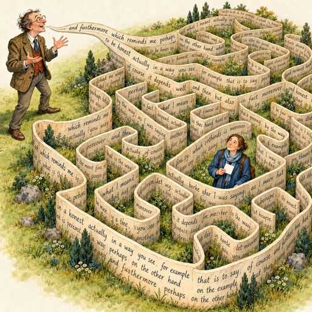
The Rambler’s Rule
Thinking rambles; knowing is concise.
An academic once told me that someone can explain their research on a postcard, or they don't know what they're talking about. When we understand something well, we can choose the words the audience needs. Otherwise, we may find ourselves thinking out loud on other people's time.
La Dolce Vita
Happiness is built on sound habits.
La Dolce Vita is the sweet life. Tender, soft, mild, even gently luxurious. This invariably involves getting things done without fuss or fanfare; finding purpose everyday activities, even when apparently dull. Aristotle observed that we become what we do. Character is accumulated behaviour. The sweet life comes from a stable way of living, rather than being visited by good feelings. When we build sound habits, we find ourselves practising virtue without noticing. It becomes part of us.
The Rule of Sam Gamgee’s Hobbit Hole
The tea party is done when the cups are washed, dried, and put back in the cupboard where they belong.
How many unfinished tasks are floating around in your head? In the 1920s, psychologist Bluma Zeigarnik observed that people tend to remember interrupted tasks better than completed tasks. [37] That is, we carry around the things we don't finish. There's rarely some future time when we're suddenly going to be inspired to do what we don't want to do right now. The best time to do the dishes is when they're in our hands, and this reduces cognitive load. Completing a task is also a way of respecting the spaces that we're in. I'm sure Sam Gamgee has the most delightful hobbit hole, with a pantry full of tea cakes, and when the cake is finished and the conversation is over, the cups go straight back to the cupboard where they belong.
Tending the Garden at Midnight
Mania and depression are motivational extremes for choosing the right things to do, and getting them done.
In Good Reasons for Bad Feelings, Randolph Nesse examines various mental disorders through the lens of evolution. [38] Mania and depression are forms of mental dysregulation that, at least in part, arise from cognitive systems that control action through reward, confidence, persistence, and disengagement. Even the simple act of picking blackcaps contains an emotional rollercoaster when zoomed in. There's the anticipation that eventually blends into mild disappointment as the pickings grow slim. Importantly, mood tracks information about progress, effort, recent success, expected payoff, and opportunity cost. That is, mood is part of the machinery of outcomes.
At the extremes, manic mood typically involves both energy and poorly thought-through action. My toddler charging through the house ready to pounce on anything that will plausibly rough-house with him -- predictably followed by equally energetic tears. And depressive moods facilitate disengagement. It's not just that there are no more blackcaps on the walk; homework is so boring, and what's the point of it all anyway.
The garden is a metaphor for the mind, where we cultivate the habits that shape our lives. Dysregulation is fundamentally an embodied experience. We may change our environment, lean on social support, take medication, change our religion, or leave it. Whatever the case, we're acting on some desire to change how we feel, and that is a deeply personal matter. How this actually works is often non-obvious, because moods are built into the machinery of cognition. They are informationally rich cogs in our behaviour. I don't know how or why this works, but in my experience, when it comes to mania and depression, I'm most energetic when I select the right things to do and put my best foot forward. When I tend my garden in this way, the machinery tends to hum peacefully.
The Quiet Gardener’s Rule
Make compost from the emotional potato peelings of others.
Negativity is part of the sovereign's compass because it highlights the problems that we need to solve. Unfortunately, it does more than that. Sometimes we fail to seek solutions, or worse, ruminate on problems with no solution. It is bewildering when negativity turns on itself. Timothy Leary's Interpersonal Circumplex offers a map to what happens next. [39] Interpersonal behaviour can drift towards hostility, submission, and dominance that invite reciprocal reactions from people: rejection or outright conflict. These psychic patterns are subconscious and automatic but hardly inevitable.
We don't have to mirror every interpersonal signal that we receive. By witnessing those we love both neutrally and accurately, we create space for them to witness themselves. By composting negative energy, we can disrupt unhelpful interpersonal dynamics, turning emotional waste into fertile ground for mutual recognition. Sometimes that's all that is needed.
The Shaker’s Rule
A pure heart tends a garden of joy.
My favourite line from the Bible is Matthew 5:8, "Blessed are the pure of heart, for they shall see God." And, at least in my theology, God is love. It brings to mind Joseph Brackett's song "Simple Gifts". Its youthful upliftedness suggests a way to be at peace with the world. We make thousands of decisions each day, and it seems that we intuitively know what is good for us. The real situation is complicated, and discriminating what's good does require curiosity. Nonetheless there's a sense that if we make a habit of choosing the good, we can build a meaningful life and a loving home. This does not happen all at once. The garden is a metaphor for the mind, and we must tend that garden patiently to realise our simple gifts.
The Fairytale Ending
Find your redhead; see her anew every day.
Popular descriptions of romance typically end when two people decide to get together. It's that walk with Mr Darcy and Elizabeth Bennet that culminates in a proposal and an acceptance that ends the story. Or in "You've Got Mail", where the two leads meet in Central Park, and Kathleen Kelly realises that her anonymous correspondent she's falling in love with is actually Joe Fox, the man she already loves. Even action movies end with a victorious kiss, and not the morning after. This is great fiction, but in reality, the fairytale ending is only the ending of the beginning.
No matter who you live with, it's important to resist the urge to habituate to them. Whether it's your wife, your parents, your children, or your friends, we become entangled in unconscious interactions, and tend to lose our curiosity. The most generous thing we can do is to pay attention to someone, and try to see who's there, no matter how many times we've seen them before, and no matter how well we think we already know them.
This is more than seeking aesthetic richness, and it's more than understanding and solving problems. Because we're entangled, curiosity is a window into the unconscious, and thus part of the examined life. And when two people do this together, that is the real fairytale ending.
The Philosopher’s Stone
Children are the future; you are the past.
We did not evolve for immortality. Age-related illness and decay is exactly what we'd expect given that natural selection favours the reproduction of successful children and grand-children. Evolution ruthlessly weeds out mutations that kill young people, but becomes indifferent to our well-being as we age. Humans are somewhat unique in that we can become parents long before we're mature. And further, it often takes decades of adulthood to understand and master our lives.
Given our brief stewardship, it's ironic that adults typically evaluate children through an asymmetry of power and competence. Yet if we're lucky enough to grow old, we'll be depending on those very same children. They may seem ignorant now, but they'll likely know more than us one day, as heirs to a more knowledgeable society. When human life is evaluated as a whole, from birth to death, children are in many ways our superiors. We should take them seriously, like we're speaking into their future, when they'll be teaching us about the world, and carrying us on their shoulders.
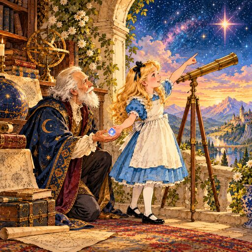
Enchanted Clay
A sunflower turns to the sun or lives in its shadow.
We are quite literally made from the earth, and by some mysterious magic became enchanted with life. 14 billion years and some hydrogen atoms are now The Ape That Understood the Universe, as Steve Stewart-Williams puts so poetically in the title of his book. [40] As sovereigns of our lives, how should we use that understanding? No matter how we answer one thing is always true. Either we turn to the light, or we are trapped by our shadow. Let that light shine into your being and enjoy.
References
- Confucius, Analects 15.24. ^ a
- Aristotle, Rhetoric, trans. W. Rhys Roberts, II.13 (1389b). ^
- Chögyam Trungpa, Cutting Through Spiritual Materialism (Boston: Shambhala, 2002). ^
- Tad Williams, The Dragonbone Chair (New York: DAW Books, 1988). ^
- Richard Wrangham, The Goodness Paradox: The Strange Relationship Between Virtue and Violence in Human Evolution (New York: Pantheon Books, 2019), 123. ^
- Stephen R. Covey, Principle-Centered Leadership (New York: Summit Books, 1991). ^
- Plato, Republic, 357a–621d. ^
- Jonathan Haidt, The Righteous Mind: Why Good People Are Divided by Politics and Religion (New York: Pantheon Books, 2012). ^ a
- Howard S. Becker, Outsiders: Studies in the Sociology of Deviance (New York: Free Press, 1963). ^
- Richard Dawkins, The Selfish Gene (Oxford: Oxford University Press, 1976). ^
- Hannah Arendt, Eichmann in Jerusalem: A Report on the Banality of Evil (New York: Viking Press, 1963). ^
- American Fiction, directed by Cord Jefferson (Orion Pictures/MGM, 2023). ^
- Charles Dickens, Hard Times (London: Bradbury & Evans, 1854). ^
- Robert Jay Lifton, Thought Reform and the Psychology of Totalism: A Study of “Brainwashing” in China (New York: W. W. Norton, 1961). ^
- Plato, Republic, 514a–517a. ^
- Daniel C. Dennett, Darwin’s Dangerous Idea: Evolution and the Meanings of Life (New York: Simon & Schuster, 1995). ^
- Steven Pinker, “The Moral Instinct,” The New York Times Magazine, January 13, 2008. ^
- Sam Harris, The Moral Landscape: How Science Can Determine Human Values (New York: Free Press, 2010). ^
- Ezra Klein, Why We’re Polarized (New York: Avid Reader Press, 2020). ^
- John Stuart Mill, On Liberty (London: John W. Parker and Son, 1859). ^
- Lewis Carroll, Through the Looking-Glass, and What Alice Found There (London: Macmillan and Co., 1871). ^
- David Marr, Vision: A Computational Investigation into the Human Representation and Processing of Visual Information (San Francisco: W. H. Freeman, 1982). ^
- W. V. O. Quine, “Two Dogmas of Empiricism,” The Philosophical Review 60, no. 1 (1951): 20–43. ^
- Bertrand Russell, The Problems of Philosophy (London: Williams and Norgate, 1912), chap. 6. ^
- René Descartes, Meditations on First Philosophy (1641), Meditation II. ^
- Anthony Stevens, The Two Million-Year-Old Self (College Station: Texas A&M University Press, 1993). ^
- Steven Pinker, Rationality: What It Is, Why It Seems Scarce, Why It Matters (New York: Viking, 2021). ^
- Richard W. Byrne and Andrew Whiten, eds., Machiavellian Intelligence: Social Expertise and the Evolution of Intellect in Monkeys, Apes, and Humans (Oxford: Clarendon Press, 1988). ^
- Robert Trivers, The Folly of Fools: The Logic of Deceit and Self-Deception in Human Life (New York: Basic Books, 2011). ^
- Daryl R. Van Tongeren, C. Nathan DeWall, Zhansheng Chen, Chris G. Sibley, and Joseph Bulbulia, “Religious Residue: Cross-Cultural Evidence That Religious Psychology and Behavior Persist Following Deidentification,” Journal of Personality and Social Psychology 120, no. 2 (2021): 484–503. ^
- Chögyam Trungpa, Journey Without Goal: The Tantric Wisdom of the Buddha (Boston: Shambhala, 1981). ^
- C. G. Jung, Aion: Researches into the Phenomenology of the Self, trans. R. F. C. Hull, 2nd ed. (Princeton: Princeton University Press, 1968), CW 9, Part II. ^
- Barbara E. Hort, Unholy Hungers: Encountering the Psychic Vampire in Ourselves and Others (Boston: Shambhala Publications, 1996). ^
- Steven C. Hayes, Kirk D. Strosahl, and Kelly G. Wilson, Acceptance and Commitment Therapy: An Experiential Approach to Behavior Change (New York: Guilford Press, 1999). ^
- W. Tecumseh Fitch, Colin Allen, and Adina L. Roskies, “The Evolutionary Functions of Consciousness,” Philosophical Transactions of the Royal Society B: Biological Sciences 380, no. 1939 (2025) ^
- J. R. R. Tolkien, The Hobbit, or There and Back Again (London: George Allen & Unwin, 1937). ^
- Bluma Zeigarnik, “Das Behalten erledigter und unerledigter Handlungen” [“The Memory of Completed and Uncompleted Actions”], Psychologische Forschung 9 (1927): 1–85. ^
- Randolph M. Nesse, Good Reasons for Bad Feelings: Insights from the Frontier of Evolutionary Psychiatry (New York: Dutton, 2019). ^
- Timothy Leary, Interpersonal Diagnosis of Personality (New York: Ronald Press, 1957). ^
- Steve Stewart-Williams, The Ape That Understood the Universe: How the Mind and Culture Evolve (Cambridge: Cambridge University Press, 2018). ^